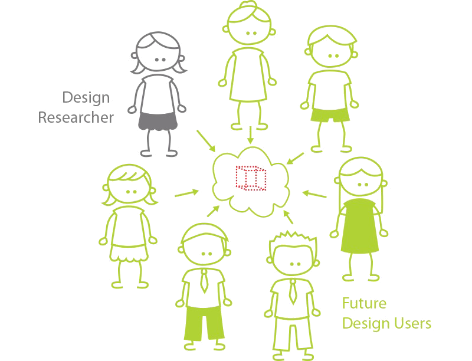
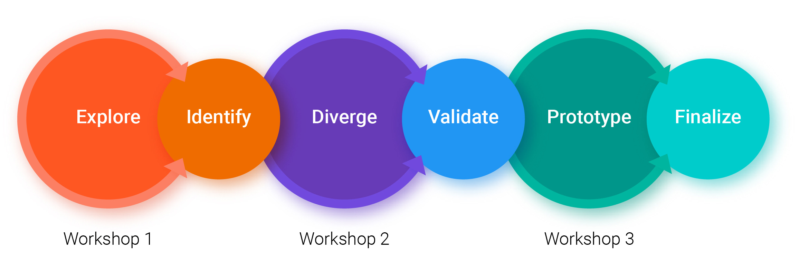
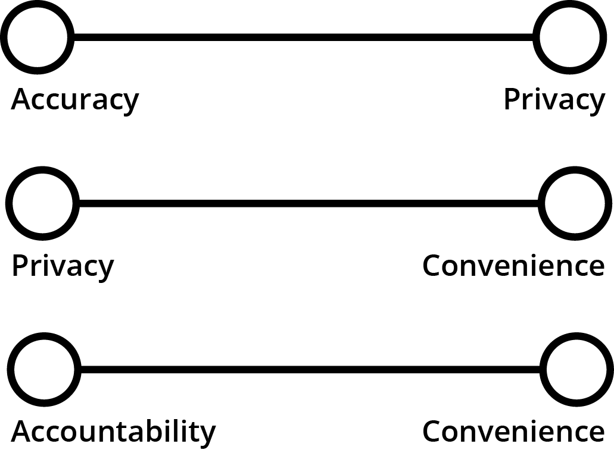

Tongle: Inclusive Design for a Civil Technology
The problem
As automotive technology advances, so does the way we need to think about supporting our transportation infrastructure in general. Specifically, funding for road infrasturcutre is in jeaprody.
- Funding for road infrasturcutre is decreasing
- The current method, a "tax at the pump" is increasingly inefficent
- Some cars(like fully electric) don't contribute any money to "tax at a pump funding"
- Fuel inefficent cars are forced to contribute an unfair amount
Why change?
- Charge all road users in porportion to how much they use the roads
- Future proof the way we pay for road infrastructure
The Proposed Solution
A Road Usage Charge(RUC) seeks to fund road infrastructure by charging tax paying citizens in proportion to how much they use Washington state roads. As a capstone team in the Human Centered Design and Engineering department, my team and I were approached by the Washingotn Transportation Comission to come up with a mobile phone application that can be used in a RUC.

Quick Information
Project Goals
- Design a mobile app experience which citizens of Washington State can use to monitor how many miles they drive on public roads
- Design a Road Usage Charge system that affects driver's lifes as minimally and harmlessly as possible
The Team
Project Manager: Alex Gilbert UX Designer: Shin Young Lucia, Molly Fallen Design Researcher: Michael FernandesLength
15 Weeks: 5 planning, 10 executionSponsor
Washington Transportation Commission, D'artagnan ConsultingOutcome Highlights
The app
Tongle is a fully branded mobile application. It was submitted to the Washington State Transportation Commission for reviewThe Process
One of the first examples of participatory design used to create a High Tech Civil Technology.Recognition
Washington State Transportation Comission:Mobile Innovation Challenge Grand Winner University of Washington Department of Human Centered Design and Engineering:
Best in Show University of Washington College of Engineering:
Capstone Funding Grant Recipient
Why Inclusive Design?

Upon getting our assignment for capstone, my team and I were a little bit lost, for a lack of better words. The app suggested clearly was going to run into some problems. It is obvious how this system might help our roads but, most of our classmates had this sense too. A solution for a road usage charge would invade people’s privacy, sense of agency and be highly resisted in a state where transportation is a bonding factor. Creating a mobile app solution for the RUC would require including a diverse range of factors and values that people placed on the application.
Focusing on Inclusiveness
Users, no matter who they are, are not one dimensional. By designing for inclusivity, designs also account for the multiplicity of all states users might take on.
Designing for inclusivity means you design for everybody. For example if you design an Xbox controller for a disabled person with one hand, you also design for a the Mother that is holding her baby while trying to game another, the snowboarder who broke their arm, and a person trying to talk to their mom with one hand and game with another.
Choosing Participatory Design

What is pariticpatory Design?
- Participatory design puts participants at the center of the design process.
- For a design result to be participatory, the project has to some how increase the agency of the end users of the design
- Design decisions are directed as much as possible by participants
How we used participatory design
- Series of 3 co-design workshops with 10 participants
- Agile method using a series of design and rearch sprints
- Each research and design sprint was a week long
Workshop #1


During Workshop #1 number we did mostly exploratory activities.
- Introduction to Participatory Design, RUC
- Likes, Dislikes and Design Ideas
- How might we design the worst possible RUC? (Bad Design Brainstorming)
During these activities we collected sticky notes and wrote down notes on conversations we had and overhead between are participants. Afterwards we coded our notes into sticky note like ideas and user our participant generated sticky notes and our own to affinity board.

A Survey to Validate Our Assumption
After affinity diagramming we noticed that our groups formed themes or articulated values. Upon reflection we decided that the best thing to do here would be to use our groups to create values that were selected.
The survey allows users to rate each value on a 7 point Likert scale and optinaly provide an explanation to their rating.Design insights from workshop #1
- There is a divide between what urban and rural drivers need in a RUC
- There is a preference for keeping the tech in a RUC as low as possible
PD insights from workshop #1
- PD is a great process for identifying edge cases in a design (where a design "breaks")
- Participants are great at ideating but need leadership from designers to do it in a focused manner
Workshop #2
#2 consisted of presenting our values and seeing where users might go with the idea.
- Presentation of Participants Value Evaluation.
- Storyboard Evaluations ~ We presented several storyboards illustrating the possible RUC solutions.
- User-Centered Design Sprint
Presenting Participants Response's to Survey
In order to add a level of we evaluated the results by averaging likert scores. We didn’t have a base metric for inclusion but noticed that there were 6 values that were clearly important to all participants. We choose to move forward with these
Something Unexpected
After presenting the values to participants an interesting thing happens people started putting values at opposite ends and using them as tensions. Something even more interesting happened when a participant said the following.

"There is no way you can have both Privacy and Accuracy. You can have one or the other but you can't have both! Ok??"
Wait, really?
I was actually the one to overhear the conversation. At the time, I was mostly just happy that our participants were enjoying the workshop. Later I realized, maybe this was the key. Maybe the solution is not to give one or the other values but to provide ways for different values to come out at different times.
Design insights from workshop #2
- Participants think of the values in a RUC as opposing traits that can be balanced back and forth
- A mobile phone app carry a stigma of monitoring and security risks
PD insights from workshop #2
- Transperency in the PD process gives participants a feeling of comfort
Workshop #3
Coming into #3 we needed to make massive action.
- Attitudinal A/B tests ~ We had participants circle around the room and compare an A and a B design.
- RUC Court ~ We presented 4 medium fidelity prototypes and asked participants to evaluate them and then vote.
- Three Wishes
RUC Court prototypes
The major part of #3 was the RUC court. In it we presented 4 different prototypes for a RUC charge.
Prototype #1: Mileage Locker
Prototype #2: Toggle Dongle
Prototype #3: External Mileage Recorder
Prototype #4: Toggle Dongle + Mobile App
The Results
After holding court, the results were in. People preffered prototype #3 and #4. It wasn't unanimous the voting was 0 votes for prototype #1, 2 votes for prototype #2, 4 votes for prototype #3 and 4 votes for prototype #4. The split decision in votes
Design insights from workshop #3
- Participants are more open to a RUC that promotes the ideal of "equity" in society
PD insights from workshop #3
- Ending with a hands on a friction activity helps wrap up pd process
Saying Goodbye to Participants
At the end of Workshop #3 we were sad to say goodbye to our participants but, the next part of our journey was just around the corner. During the next two weeks my team and I went through a series of iterations to create Tongle.
The Final Product
Tongle is combined solution made up of the ideas first suggested in the RUC court. It gives participants the option of whether they want to track all their mileage on their phone or to buy an external device. It further implements suggestions provided throughout the 3 workshops. This is how each value came to play in the solution
State Flow
Sitemap
Medium Fidelity
High Fidelity User Flows

Reflection
After finishing this project and while I presented it during capstone, I always highlighted how powerful a process participatory design can be. After some time has passed I have reflected on what the takeaways for me are. A PD process can be time-consuming and hard to get buy-in from stakeholders. However, I think PD's commitment to the user can and should be emulated. In particular, I think adapting an inclusive design perspective can benefit most design projects by allowing for many different forms or types of the user to benefit from an inclusive perspective.
To show how inclusive design uniquely benefitted Tongle, take the following example.
By creating a design that allowed those who wanted complete privacy in their location data, Tongle also benefits a range of people. It allows employees to charge their employers on trips taken for company work, it allows a teenager to sneak off to their first concert, or a husband to surprise his wife with a birthday present. By creating an app that allows for flexible use, the user acceptance of the app was increased and thereby a better experience was created overall.
Back to portfolio
Lookbook